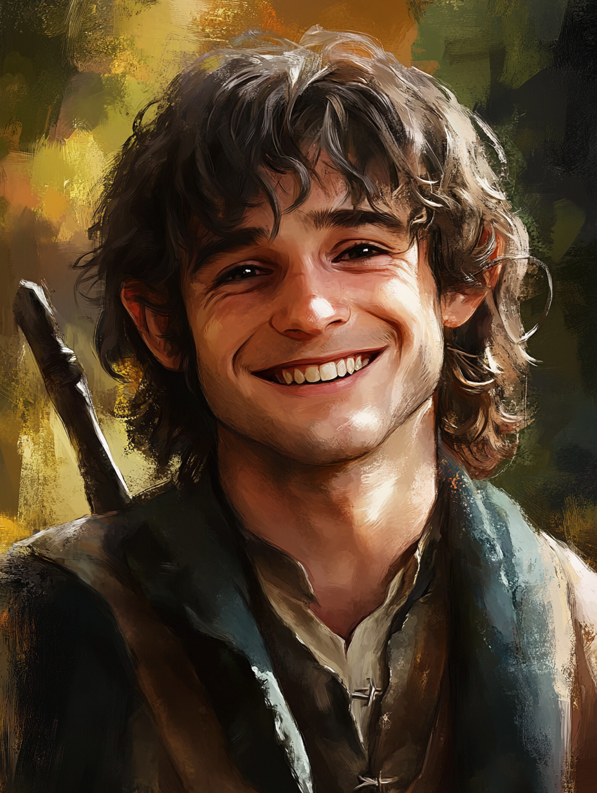

Your guide
"I have lived in the hills of the Shire for over 30 years, so I know all its hidden nooks and the best spots for second breakfast."
The cozy home of the famous Bilbo and Frodo Baggins, offers a glimpse into the heart of the Shire.
The perfect spot for a relaxing evening with friends, offering warm hobbit hospitality
Enjoy a peaceful walk with stunning river views, connecting the Shire to the wonders beyond.
"I have lived in the hills of the Shire for over 30 years, so I know all its hidden nooks and the best spots for second breakfast."